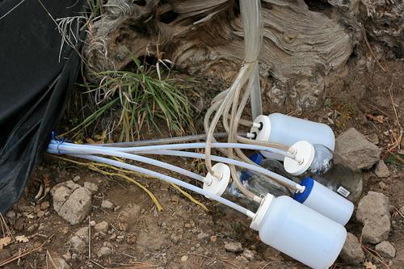
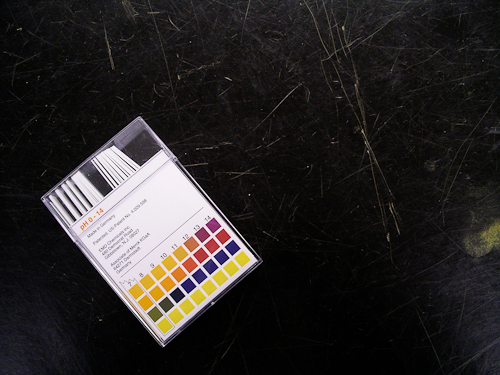

Environmental Scientist/Geologist
Shaw Environmental Inc, Los Alamos National Laboratory
My second job after undergrad was as an Environmental Scientist working on Environmental Restoration projects at the Los Alamos National Laboratory. Here I wore a variety of different hats depending on whcih projects were ongoing. In the office I was the sole GIS person so I did a lot of site and sampling plan maps to gi into our projects documents. This is where I first started to export my maps from GIS to Illustrator to clean them up and give them an overall better appearance. Unfortunately, I did not get to keep any of the maps I worked on due to most of the information being sensitive in nature.
Another project that I was heavily involved was serving as a team leader for the Water Quality and Hydrology Group at the lab. Every monsoon season we had teams of samplers go out in to the canyons around Los Alamso and collect surface water samples downstream form historically contamintaed sites. My role was to lead a team of samplers into the field, often to hard to reach locations, to collect stormwater from ISCO and Single Stage water samplers. We also took water quality field measurements (pH, turbidity, DO etc.) and maintiened a chain of custody until we delivered to a small lab for packaging and shipping for analysis. I also spent a lot of time in the laboratory preserving and preparing the samples for shipment.
At Shaw I also gained a lot of work experience as a geologist performing activities such as logging drilling cores, creating geologic cross-sections, performing bedrock penetration tests and much more. I had a great mentor who taught me a lot about geology and who really was pushing for me to become a Professional Geologist. Unforutnately, Shaw lost all their contracts at the Lab when a rival company took over it's management and they had to shut down the office.